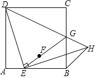
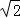
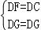
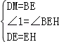
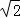
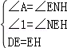
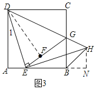
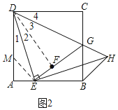
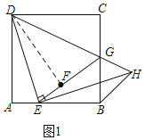

2018年北京市中考数学试题 · 数学解答题 第27题 · 对应解析
27．（7.00分）如图，在正方形ABCD中，E是边AB上的一动点（不与点A、B重合），连接DE，点A关于直线DE的对称点为F，连接EF并延长交BC于点G，连接DG，过点E作EH⊥DE交DG的延长线于点H，连接BH．
（1）求证：GF=GC；
（2）用等式表示线段BH与AE的数量关系，并证明．

【分析】（1）如图1，连接DF，根据对称得：△ADE≌△FDE，再由HL证明Rt△DFG≌Rt△DCG，可得结论；
（2）证法一：如图2，作辅助线，构建AM=AE，先证明∠EDG=45°，得DE=EH，证明△DME≌△EBH，则EM=BH，根据等腰直角△AEM得：EM=

AE，得结论；证法二：如图3，作辅助线，构建全等三角形，证明△DAE≌△ENH，得AE=HN，AD=EN，再说明△BNH是等腰直角三角形，可得结论．
【解答】证明：（1）如图1，连接DF，
∵四边形ABCD是正方形，
∴DA=DC，∠A=∠C=90°，
∵点A关于直线DE的对称点为F，
∴△ADE≌△FDE，
∴DA=DF=DC，∠DFE=∠A=90°，
∴∠DFG=90°，
在Rt△DFG和Rt△DCG中，
∵

，∴Rt△DFG≌Rt△DCG（HL），
∴GF=GC；
（2）BH=AE，理由是：
证法一：如图2，在线段AD上截取AM，使AM=AE，
∵AD=AB，
∴DM=BE，
由（1）知：∠1=∠2，∠3=∠4，
∵∠ADC=90°，
∴∠1+∠2+∠3+∠4=90°，
∴2∠2+2∠3=90°，
∴∠2+∠3=45°，
即∠EDG=45°，
∵EH⊥DE，
∴∠DEH=90°，△DEH是等腰直角三角形，
∴∠AED+∠BEH=∠AED+∠1=90°，DE=EH，
∴∠1=∠BEH，
在△DME和△EBH中，
∵

，∴△DME≌△EBH，
∴EM=BH，
Rt△AEM中，∠A=90°，AM=AE，
∴EM=

AE，∴BH=AE；
证法二：如图3，过点H作HN⊥AB于N，
∴∠ENH=90°，
由方法一可知：DE=EH，∠1=∠NEH，
在△DAE和△ENH中，
∵

，∴△DAE≌△ENH，
∴AE=HN，AD=EN，
∵AD=AB，
∴AB=EN=AE+BE=BE+BN，
∴AE=BN=HN，
∴△BNH是等腰直角三角形，
∴BH=HN=AE．



【点评】本题考查了正方形的性质，全等三角形的判定定理和性质定理，对称的性质，等腰直角三角形的性质等知识，解决本题的关键是利用正方形的性质得到相等的边和相等的角，证明三角形全等，作出辅助线也是解决本题的关键．